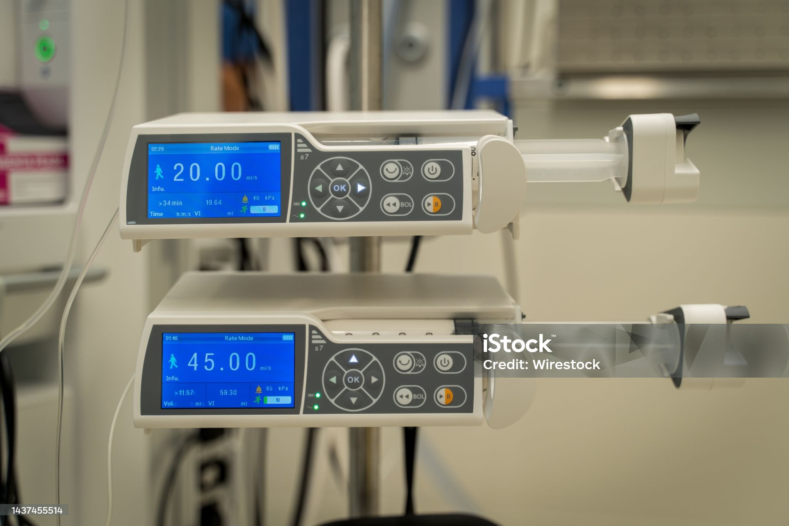
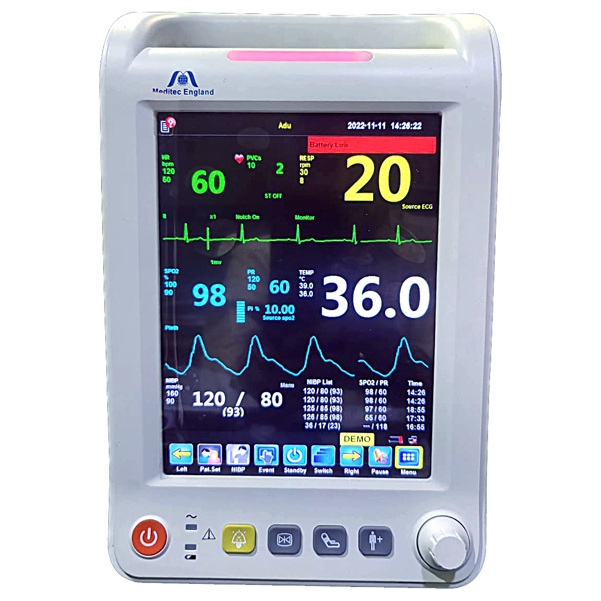

Stackly VitalView Monitor
Multi-parameter bedside monitor for continuous vital signs tracking with alarm management and clear numeric/graphical display.
Explore Stackly devices by category. Each product includes typical clinical use-cases and configuration options.
Multi-parameter bedside monitor for continuous vital signs tracking with alarm management and clear numeric/graphical display.

Compact analyzer suited for diagnostic labs with guided workflows, onboard QC prompts, and connectivity for result export.

Infusion pump with dose calculation, occlusion detection, and clear logs for documentation and audits.

Monitoring platform adapted for neonatal care, with optimized alarm thresholds and compact footprint.
Home monitoring kit for patients, with simple instructions and easy-to-read displays, built for remote follow-up.
Assistance console to organize imaging data, reports, and device presets across multiple scanning rooms.
When you reach out, we combine information about your departments, staff, and existing equipment before suggesting any devices.
We look at your ICUs, wards, labs, and home-care programs so the same device family can be configured correctly.
We map calibration, maintenance windows, and training into the recommendation so the devices stay dependable.
We provide specification summaries and notes that are easy to use for procurement, engineering, and clinical teams.